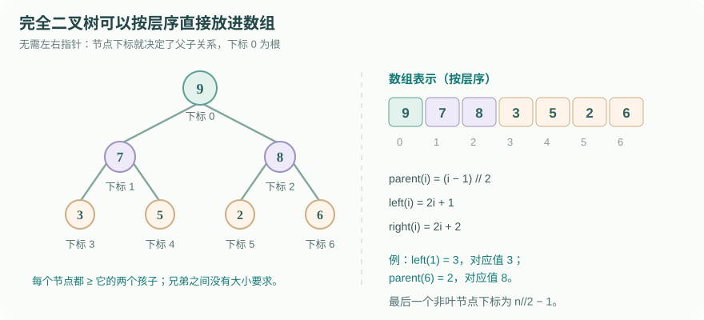
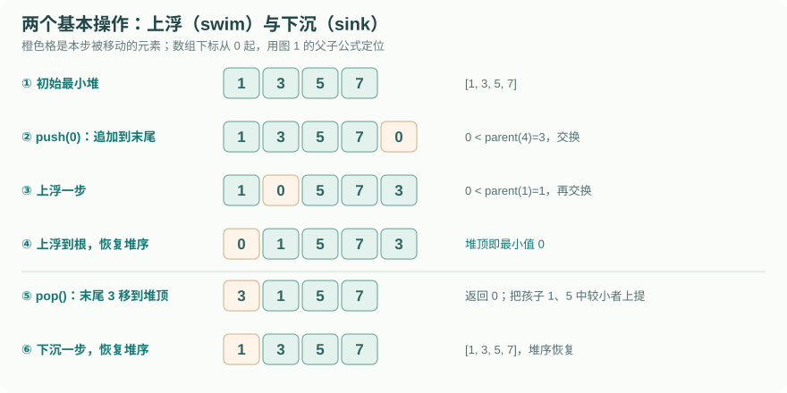

堆与优先队列：只要最值，不要全局有序
优先队列只需要反复取出最小（或最大）的元素，不要求整体有序。完全二叉树的形状约束加上堆序，让插入与删除都在 O(log n) 内完成，还能用一个数组紧凑存储。
从优先队列到堆：只要最值，不要全局有序
很多任务只需要反复取“当前最小”或“当前最大”的元素：调度器每次选最早到期的任务、Dijkstra 每次选出距离最小的未定节点、Top-K 问题只要保留最大的 K 个。描述这种需求的抽象数据类型是优先队列，它至少提供 insert 与 extract_min（或 extract_max）两个操作。
如果只能用一个已排序数组，插入新元素要搬移槽位，是 O(n)；用无序数组则相反，取出最值要扫一遍，也是 O(n)。平衡搜索树两者都能 O(log n)，但要维护全序、且指针开销不小。堆提供了一个更轻的方案：两个操作都是 O(log n)，常数小，而且可以存在一个连续数组里。
关键在于：优先队列只关心“谁是第一个”，不关心其余元素之间的顺序。堆正是为这个较弱需求设计的数据结构。
堆的两条不变量：完全二叉树 + 堆序
堆同时满足两个条件：
- 完全二叉树：除最后一层外每层都填满，最后一层从左到右连续填充。于是有 n 个节点的堆高度恰为 ⌊log₂ n⌋，不会出现偏斜。
- 堆序：最大堆中每个节点的键都 ≥ 它的两个孩子（最小堆则相反）。注意只约束父子，不约束兄弟。
因此堆与上一章的 BST 很不相同：堆不要求中序遍历有序，也不能用它做范围查找。下面两棵树都是合法的最小堆，因为父与子的关系都满足，而兄弟之间的 5 和 7 谁大谁小无关紧要：
合法最小堆 A 合法最小堆 B
1 1
/ \ / \
3 5 3 7
/ \ / \
7 9 5 9
# 两棵都是小顶堆：父 ≤ 子。注意中序遍历 A 得 [7,3,9,1,5]，
# 不是升序——堆不是二叉搜索树。数组表示：下标本身就是父子关系
因为堆是完全二叉树，按层序从左到右读出节点，不会出现空洞。把结果直接放进数组，父子关系就能用下标算出来（下标从 0 起）：对节点 i，parent = (i−1)//2，left = 2i+1，right = 2i+2。这样既不需要指针，也不需哨兵占位。

def parent(i):
return (i - 1) // 2
def children(i):
return 2 * i + 1, 2 * i + 2
heap = [9, 7, 8, 3, 5, 2, 6] # 图 1 中的最大堆
assert parent(6) == 2 and heap[2] == 8
assert children(1) == (3, 4)
assert all(heap[i] <= heap[parent(i)] for i in range(1, len(heap)))最后一个拥有孩子的节点下标是 n // 2 − 1；超过它的下标都是叶子。这个事实在下一节建堆时会用到。
插入与弹出：上浮和下沉
两个操作都只沿一条祖先路径修修指针，所以代价是 O(树高) = O(log n)：
- 插入：把新元素追到数组末尾（保持完全形状），再不断与父节点比较，若违反堆序就交换，直到满足为止——这就是上浮。
- 弹出：取出
heap[0]后，把末尾元素移到根（继续保持完全形状），再不断与较小的孩子交换，直到父不大于孩子——这就是下沉。

def push(heap, value):
heap.append(value)
i = len(heap) - 1
while i > 0 and heap[i] < heap[(i - 1) // 2]:
parent = (i - 1) // 2
heap[i], heap[parent] = heap[parent], heap[i]
i = parent
def pop(heap):
top = heap[0]
last = heap.pop()
if heap:
heap[0] = last
i = 0
while True:
left, right = 2 * i + 1, 2 * i + 2
small = i
if left < len(heap) and heap[left] < heap[small]:
small = left
if right < len(heap) and heap[right] < heap[small]:
small = right
if small == i:
break
heap[i], heap[small] = heap[small], heap[i]
i = small
return top注意 pop 在堆只剩一个元素时直接返回它，不要再去访问空数组。空堆上调用 pop 应报错，而不是静默返回。
逐步观察数组变化
固定演示序列：依次 push(5) push(1) push(3) push(0)，再 pop()。拖动滑块查看每一步的数组。
为什么自底向上建堆是 O(n)
把一批已有的元素变成一个堆，最直接的做法是逐个 push，最坏要 O(n log n)。但还有一个更快的做法：把数组直接当作完全二叉树，从最后一个非叶节点 n//2 − 1 开始，从后往前对每个节点做一次下沉。因为下沉时它的子树已经是堆，一次下沉就能让以它为根的子树也变成堆。
def heapify(values):
for i in range(len(values) // 2 - 1, -1, -1):
sink(values, i, len(values))
return values
# 只需处理一半下标；下标 n//2 及其之后都是叶子，无需下沉。关键不是“每次下沉 O(log n)”：深层的节点很多但下沉距离很短，浅层的节点很少但距离很长。若按高度 h 分组统计总交换次数，一个高度为 h 的节点至多下沉 h 次，而高度为 h 的节点数不超过 n / 2h+1，于是总工作量至多为：
最后一步用到级数 Σ h/2h = 2，是一个常数。所以自底向上建堆是最坏情况下的 O(n)，而不是 O(n log n)。
堆排序：原地、O(n log n)、不稳定
有了建堆与下沉，排序只需两步：先把数组建成最大堆，然后反复把堆顶（当前最大值）与末尾交换，缩小堆的范围并下沉新的堆顶。堆在数组内部长大缩小，不需要额外空间。
def heap_sort(values):
data = list(values)
n = len(data)
for i in range(n // 2 - 1, -1, -1): # 1. 建最大堆
sink(data, i, n)
for end in range(n - 1, 0, -1): # 2. 逐个把最大值放到末尾
data[0], data[end] = data[end], data[0]
sink(data, 0, end)
return data建堆 O(n)，接下来的 n−1 次下沉每次 O(log n)，总计 O(n log n)，并且是原地排序（递归下沉可以写成循环，辅助空间 O(1)）。它与快速排序一样是不稳定的：相等元素很可能被交换到不同相对位置。需要注意 Python 内置的 sorted 使用 Timsort，而不是堆排序；heapq 只提供最小堆原语。
适用边界与常见误区
- “堆能快速查找任意元素”：不行。查出堆顶是 O(1)，但查找任意键必须扫描，O(n)。
- “堆是排好序的”：不是。堆只保证父与子的关系；数组下标顺序也不等于有序顺序。
- “堆排序与归并一样稳定”：堆排序不稳定；需要稳定排序应选归并或 Timsort 类算法。
- “需要范围查询也选堆”：范围或有序遍历应用平衡树 / 有序数组；堆不提供这些能力。
一个典型应用是 Top-K：求最大的 K 个元素时，维护一个大小为 K 的最小堆，比当前堆顶大就替换并下沉。遍历 n 个元素、每次 O(log K)，总代价 O(n log K)，额外空间只有 O(K)，比全排序 O(n log n) 在 K 远小于 n 时更划算（本章复杂度均按比较模型计）。
带走三个判断准则
- 堆只维护“父与子”的比较关系，不维护兄弟序或全局序；这正是它比有序结构更省的地方。
- 堆序的约束只沿一条祖先路径展开，插入与弹出的代价是 O(log n)，对应树高。
- 自底向上建堆用势能式的求和论证得到 O(n)，不等于“插入 n 次”的 O(n log n)。
继续学习与校验资料
- MIT 6.006：Binary Heaps — 堆操作与建堆的线性时间论证
- Python heapq — 标准库最小堆接口，注意它是 0 基数组实现
- 上一章：平衡二叉树 — 另一种维持有序的树结构
- 下一章：图基础 — 从树走向一般图的表示